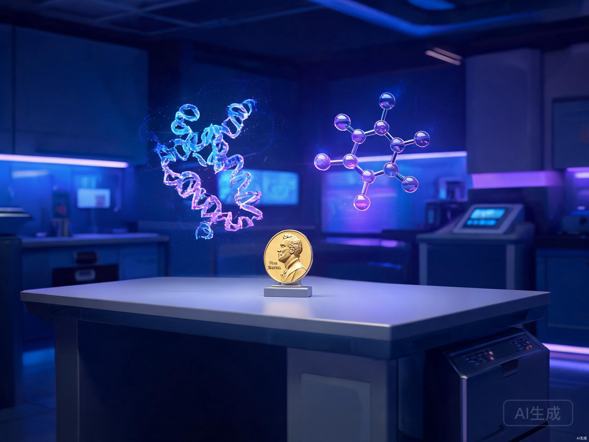

2026年8月5日，谷歌AI在同一天失去了两位灵魂人物。
Jeff Dean，在谷歌待了27年的首席科学家，亲手打造了TensorFlow和Google Brain的那位传奇，宣布明天就是最后一天。他要带着三个老搭档出去创业。同一天，诺奖得主Demis Hassabis卸任Google DeepMind CEO，交出了日常运营大权。
Alphabet股价应声跳水5%。朋友圈刷屏"谷歌完蛋了"。
但我一直在想一件事。这两个人，一个是AI基础设施的奠基者，一个是AlphaGo和AlphaFold的缔造者。他们不是被裁的，不是被架空的，是主动走的。而且走的方向出奇地一致，都指向科学发现。
当AI界最有成就的人选择离开最有钱的公司，这件事本身，比谷歌股价跌多少重要得多。
先把时间线捋清楚。
四个人跟着Jeff Dean一起走。Sanjay Ghemawat，MapReduce的共同发明人，Jeff Dean长达30年的"代码灵魂伴侣"。Oriol Vinyals，Gemini核心负责人，星际争霸AI AlphaStar的缔造者。Quoc Le，AutoML之父，Seq2Seq突破的关键人物。
这四个人凑在一起，就是一张"谷歌AI黄埔军校"的毕业合影。
Discovery Loop的定位是一家公益公司（Public Benefit Corporation），使命是"用机器学习自动化科学和工程发现"。Hassabis那边，转任主席后专注两件事，一是AGI的长远战略，二是Isomorphic Labs的疾病治愈研究，目标是攻克癌症。
消息出来后，Alphabet盘中跌了5.4%。同一时间AMD涨了，英伟达震荡。华尔街在用脚投票，押的是"分散"而不是"集中"。
很多人把这件事解读成"谷歌留不住人了"。坦率地讲，这个判断太浅了。
Jeff Dean在离职前6天做了一期YC访谈，亲口承认自己低估了AI的进展速度。他说一年前判断AI接近初级工程师水平，现在回头看，复杂任务能力的增长比他想象的快得多。
一个低估了AI速度的人，选择在这个时候离开一家19万人的公司。你觉得他是因为失望走的，还是因为看到了什么东西？
我自己的感受是，Jeff Dean看到了一个窗口。
Discovery Loop要做的，是用AI自动化"提出假设、设计实验、评估结果、迭代改进"这个科学发现的完整闭环。Hassabis要做的，是用AI做药物发现，治愈癌症。两个人的路径不同，但指向同一个判断，AI的下一个阶段不是谁的参数更大，而是AI能解决什么真正的问题。
这不是空谈。Jeff Dean接受《纽约时报》采访时说了一句话，我觉得这才是整件事最核心的信号。他说，"We might make decisions that are not necessarily in the company's purist financial interests"，我们可能会做出不符合公司纯财务利益的决策。
"We might make decisions that are not necessarily in the company's purist financial interests."
上市公司首席科学家说出这句话，信息量太大了。
在大公司里做AI4Science，你得跟CFO解释为什么要把算力花在蛋白质折叠上而不是广告推荐系统上。你得跟投行分析师解释为什么季度财报里没有AI药物管线的收入。你得跟法务团队解释为什么要把研究成果开源。
Jeff Dean不想再解释了。
过去十年，AI人才的大方向是从创业公司流向大厂。DeepMind被Google收购，OpenAI拿了微软的钱，Anthropic拿了Google和亚马逊的钱。大厂有算力、有数据、有薪酬，是AI人才的终极归宿。
但现在风向变了。Noam Shazeer离开Google去Character.AI又回来又走了，Mira Murati离开OpenAI创业，现在Jeff Dean也走了。这些人不是找不到工作，是找到了比工作更重要的东西。
Khosla Ventures的创始人Vinod Khosla投了Discovery Loop的种子轮，他说了一句话，"这个团队能重新定义工程和科学研究的运作方式，其影响力可能与我们2018年投资OpenAI时一样巨大。"
2018年投OpenAI。你品品这个对比。
算力充足但要排期，数据独占但合规漫长，决策走委员会制，薪酬是现金加RSU，文化流程优先
算力精打细算但灵活，公开数据加自有pipeline，一句话拍板，现金加股权潜在倍数高，文化实验优先
Discovery Loop要做什么？用AI自动化科学发现的闭环。Hassabis要做什么？专注Isomorphic Labs做药物发现，目标是治愈癌症。
两个人都不约而同地把目光从consumer AI转向了AI4Science。这不是巧合。
当ChatGPT的月活到了10亿，当Gemini app的用户到了9.5亿，消费者AI的增量空间在收窄。但科学发现的自动化，几乎是未被触碰的蓝海。一个能自主提出假设、设计实验、验证结果的AI系统，对人类知识生产的加速效应，可能是过去500年最大的。
Jeff Dean在YC访谈里说过，AI创业要找"模型只有1%成功率的问题"。科学发现自动化，恰恰是这类问题。难，但一旦突破，回报是不可想象的。

Pichai做了一个很有意思的选择。他没有试图阻止Jeff Dean离开，反而成了Discovery Loop的创始投资方和云服务合作伙伴。
这意味着什么？Google的角色在变。过去大厂的逻辑是"拥有AI人才"，把最聪明的人圈在自己的园区里。现在变成了"投资AI人才"，你走可以，但我投你，用我的云，用我的算力。
这不是Google大度，是不得已。当一个27年的首席科学家铁了心要走，你能做的就是体面地送他出门，顺便把投资关系绑住。
但这个模式一旦跑通，更多的人会走。大厂会越来越像一个AI人才的"孵化器"，孵大了就飞走。这对大厂的护城河不是好消息。
主流观点有两种，我觉得都不对。
第一种，"谷歌完蛋了"。Alphabet有完整的AI全栈，从TPU到云到模型到应用，Gemini app月活9.5亿。一家公司同一天换两个高管就完蛋了？这也太小看Google了。Koray接管后Gemini 4的研发在继续，基础设施没有动。
第二种，"Hassabis被架空了"。有人说他从CEO变成主席是明升暗降。但Hassabis自己说得很清楚，他要专注AGI的长期战略和Isomorphic Labs的疾病研究。一个想按"十年"甚至"人类历史"来思考问题的人，不应该被日常运营拖住。
但这两种观点都漏掉了一个更深的信号。
真正的问题不是Google怎么了，而是为什么最成功的人要走。Jeff Dean在谷歌拥有几乎无限的资源。他要算力有TPU集群，要数据有13个十亿用户产品，要钱有世界上最高的薪酬包。他什么都不缺。
他缺的，是自由。
在大公司里做一个偏离主营业务的方向，你需要说服CFO、说服投行分析师、说服法务、说服合规团队。Jeff Dean对NYT说那句"可能会做出不符合公司纯财务利益的决策"，背后的潜台词就是，在上市公司里做AI4Science，束手束脚。
Hassabis也一样。他在达沃斯说过，AI的头号应用应该是改善人类健康。但CEO的日常是管模型发布节奏、管团队士气、管跟OpenAI的竞争。他想做的事和CEO的日常之间存在巨大的裂缝。
所以这次"双震"的真正信号是，AI4Science的窗口已经大到足以让最顶尖的人放弃大厂的安全网。
我有几个判断。
第一，会有更多大厂AI顶级人才出走。Jeff Dean开了个头，而且是个体面的头。Google投了钱，Pichai发了感谢帖，华尔街虽然跌了但也不至于崩。这个示范效应会加速。
第二，AI4Science会成为下一个爆发点。Discovery Loop的种子轮已经关闭，Radical Ventures和Khosla Ventures领投，Lightspeed、Kleiner Perkins等硅谷顶级资本悉数入局。当钱开始往这个方向涌，人才会跟上。
第三，对中国AI公司来说，这是个机会窗口。当全球最顶尖的AI人才开始往AI4Science方向走，consumer AI的竞争压力会短暂缓解。阿里Qwen-Image-3.0昨天刚上线就冲到全球第五，国产模型在应用层的突破速度在加快。深势科技、百图生科这些国内AI4Science公司也值得关注。在全球AI人才重新洗牌的节点上，中国AI公司有机会吸引到更多原本流向硅谷的人才。
但窗口不会永远开着。等Discovery Loop跑通了闭环，等Isomorphic Labs的药物管线进入临床，先发优势就建立起来了。
Jeff Dean在谷歌的最后一天，公司从25人变成了19万人，他参与打造了13个十亿用户级产品。这个履历已经足够传奇。
但他选择在55岁的年纪清零重来。不是因为他失去了什么，是因为他看到了更大的东西。
1999年他加入谷歌时，谷歌还是一家搜索公司。27年后他离开时，谷歌是AI时代最重要的玩家之一。现在他要去造的东西，如果成了，可能比谷歌这27年加起来还大。
你如果关注AI，别只盯着模型排名和参数大小了。真正值得看的是，最聪明的人在往哪里走。
他们的脚，比他们的嘴诚实。
谢谢你看我的文章。
信息来源：Google官方博客、X/Jeff Dean、X/Demis Hassabis、Axios、纽约时报、头条新闻